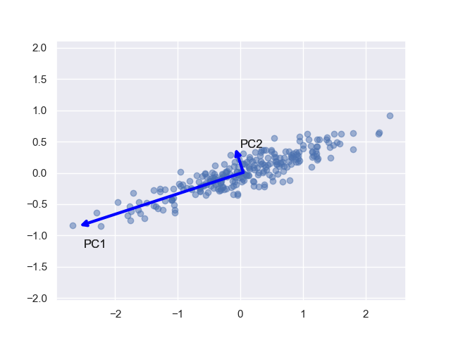

Principal Component Analysis (PCA)-dimensionality reduction algorithm
- PCA is very popolar dimensionalty reduction algorithm, it is very much used in data
science, image processing,computer vision etc. In PCA, the idea is an high dimensional
data will be explained by the low dimensional variables without the major loss of
the information. PCA finds the directions according to the variance associated to the directions,
first principal component ($PC$) is the direction where the maximum variance is associated in the
direction, second $PC$ refers to the second maximum variaince direction.

Percentage of variance explained by the $PC$'s
Training images
Reconstruction of the training images using $PC$'s